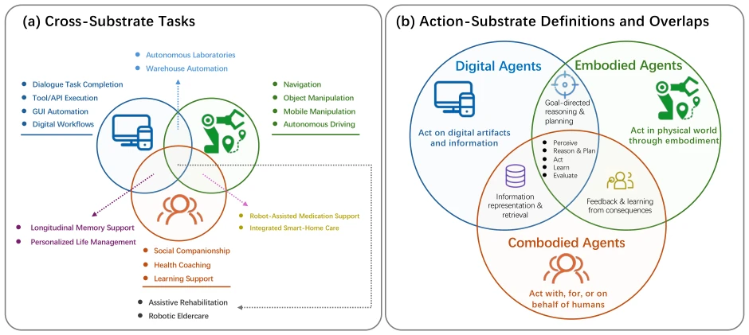
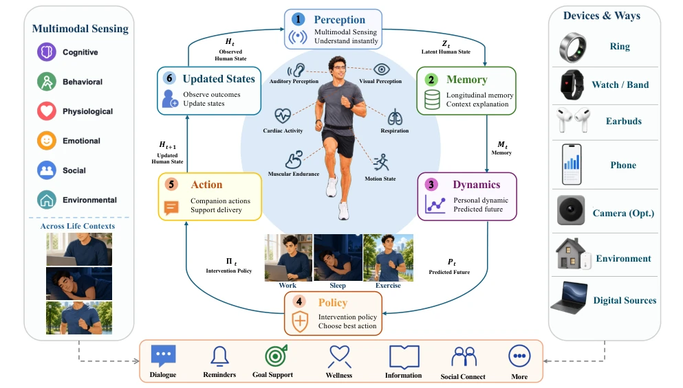
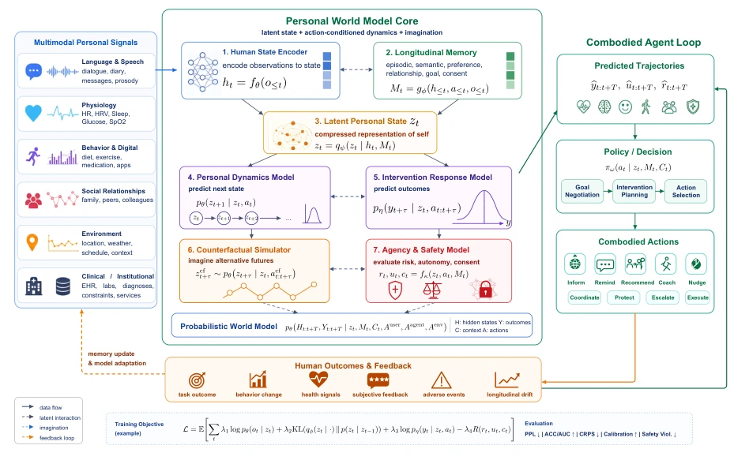
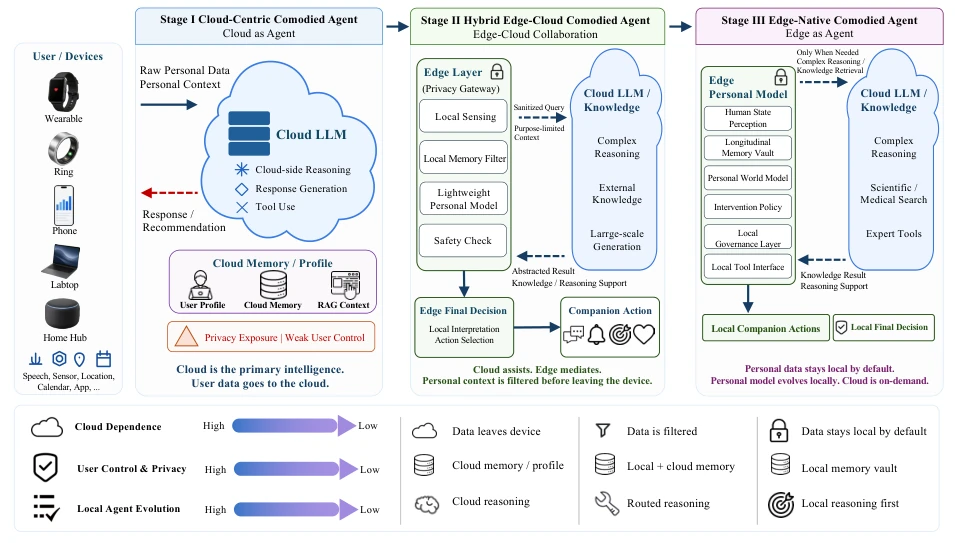
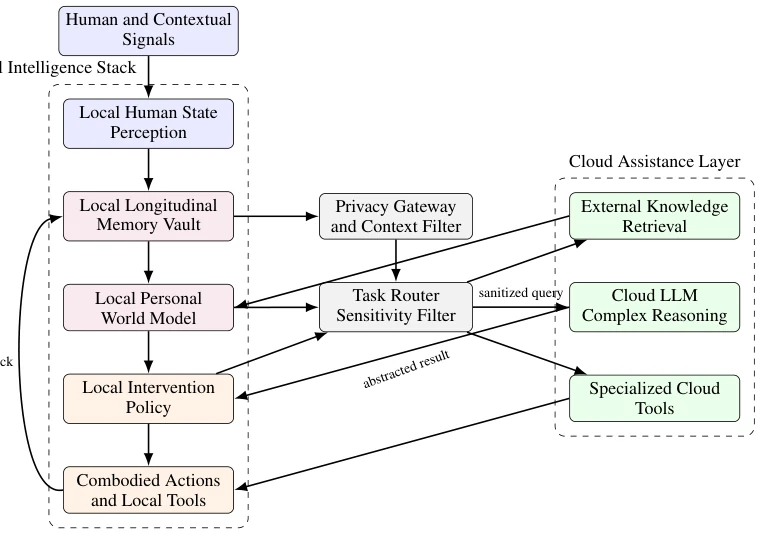
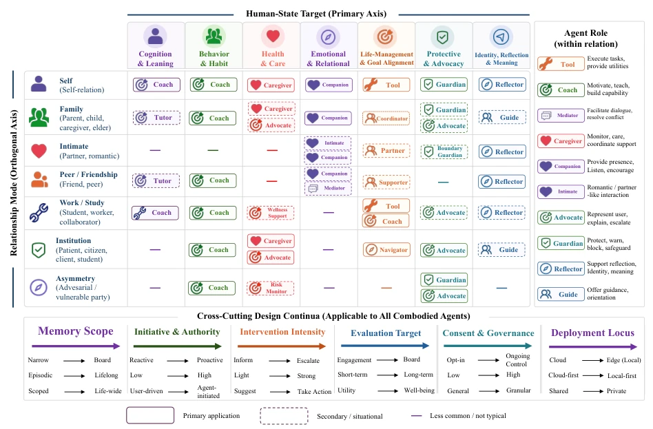

这篇论文试图用“组合具身”（Combodied）这个新词来包装人类中心主义，本质上是在现有 Agent 范式上打补丁。优点是把“人的状态”从背景板拉到了C位，强调长期记忆和干预的可逆性，这点比单纯追求任务完成的 Digital/Embodied Agent 有远见。缺点是概念堆砌感强，PWM（Personal World Models）听起来高大上，但具体怎么从碎片数据里“校准”分布？文中没给数学细节。而且“人类受益”这种目标太虚，怎么量化？最后落地到 Edge AI 倒是务实，但整体更像一份宣言而非技术落地指南，硬核技术含量存疑。此外，它假设用户能随时修正记忆，这在现实隐私和认知负荷下是否可行？建议后续补充实证，否则容易沦为“正确的废话”。
This paper attempts to package anthropocentrism with the new term "Combodied", essentially patching the existing Agent paradigm. The advantage lies in pulling the "human state" from the background to the center stage, emphasizing long-term memory and the reversibility of intervention; this is more visionary than Digital/Embodied Agents that solely pursue task completion. The disadvantage is a strong sense of concept stacking; PWM (Personal World Models) sounds high-end, but how exactly to "calibrate" distributions from fragmented data? No mathematical details are provided in the text. Moreover, goals like "human benefit" are too vague, how to quantify? Finally, deployment on Edge AI is pragmatic, but overall it resembles a manifesto more than a technical implementation guide, and the hardcore technical content is questionable. Additionally, it assumes users can correct memories at any time, whether this is feasible under real-world privacy and cognitive load? It is suggested to supplement empirical evidence subsequently, otherwise it easily degenerates into "correct nonsense".
Existing Agent research focuses excessively on task completion, leading to a disconnect between human and AI capability development [12, 13]. Digital Agents handle software states, Embodied Agents handle physical states, but both ignore the evolution of "humans" as dynamic subjects [1, 2, 3]. For example, a Health Agent might only remind to take medicine, but not judge whether the user refuses due to side effects [42, 43]. This fragmentation leads to dependency, privacy invasion, and loss of autonomy [16, 19]. The paper points out that existing systems lack modeling of long-term human state trajectories and cannot provide proportionate interventions under safety, consent, and autonomy constraints. A new paradigm is needed that centers human agency as the core goal, rather than merely treating humans as part of the task environment. Existing systems optimize external tasks rather than human trajectories, models are fragmented, safety evaluation is missing. Additionally, general model values are concentrated, potentially weakening user decision-making power under cultural differences, exacerbating social risks.

Figure 1: Action substrates and representative task configurations in Agentic AI. (a) Representative substrate-dominant and cross-substrate tasks for Digital, Embodied, and Combodied Agents. The examples are illustrative rather than exhaustive, and their placement indicates which target states and evaluation objectives are jointly involved. (b) The three overlapping centers of gravity are defined by the states that primarily organize modeling, action, and evaluation: digital states and artifacts, physical or simulated physical states, and evolving human states and agency. Pairwise overlaps denote systems that couple digital planning with physical execution, digital support with longitudinal person modeling, or physical assistance with adaptation to human outcomes; the central overlap integ
The framework core is a closed-loop system (Figure 2). 1. **Event-based Multimodal Perception**: Do not store raw data, but extract meaningful "event-evidence" from noise, distinguishing active reporting from passive sensing [3.1-3.5]. Emphasize the timeliness and uncertainty of evidence, rather than simple classification. 2. **Longitudinal Memory**: Includes episodic, semantic, trajectory, goal, relationship, and intervention response memory, supporting user correction and forgetting [Table 2]. Memory is not only storage but also an explainable evidence chain. 3. **Personal World Models (PWM)**: Based on memory and context, predict state-event-result trajectories under different interventions, rather than single prediction [Fig 3]. This is the core innovation, simulating "what-if" causal reasoning. 4. **Intervention Strategies**: Select actions (e.g., reminder, coaching, escalation) under consent, safety, reversibility constraints, rather than blind execution. Architecturally supports evolution from cloud to edge native, ensuring sensitive computation at the user end [Fig 4, 5].

Figure 2: Functional organization of a Combodied Agent. Multimodal observations support human-state estimation; longitudinal memory supplies relevant temporal context; a personal world model predicts state–event–outcome tra- jectories under alternative decisions, interventions, and contextual changes; and an intervention policy selects and delivers appropriate support. Feedback from the person and environment closes the loop. Safety, uncertainty, consent, and user control constrain every stage.

Figure 3: Reference technical scheme of a PWM. Event evidence and longitudinal memory support a posterior over latent personal state; domain- and horizon-specific dynamics and response models generate state–event–outcome tra- jectories under alternative decisions, interventions, and uncertain user and environmental responses; and an admissi- bility boundary constrains decision, action, feedback, and model update.

Figure 4: Three-stage development of Combodied Agent deployment. The trajectory moves from cloud-centric as- sistants with personal context, to hybrid edge-cloud systems that mediate sensitive context locally, and finally to edge-native personal models where memory, personalization, and intervention policy primarily reside on trusted user- side devices.

Figure 5: Reference architecture of an edge-native Combodied Agent. Personal state perception, longitudinal memory, the PWM, and the Intervention Policy primarily reside on the user’s edge devices. Cloud models are invoked only through a privacy gateway and task router for complex reasoning, external knowledge retrieval, or specialized tools.

Figure 6: Three-axis taxonomy of Combodied Agents. Combodied Agents can be classified by the human-state target they model or intervene upon, the relational context in which the user is situated, and the agent role adopted within that relationship.
实验Experiments
本文为理论框架论文，未提供具体的实验验证、数据集或基准测试。文中主要贡献在于定义范式、形式化闭环架构及提出设计空间分类（Figure 6）。虽然提及了 Edge AI 和 PWM 的概念，但缺乏实证数据证明其优于现有 Digital 或 Embodied Agent。评估指标仅停留在概念层面，如“能力增长”、“自主性保留”，未给出具体量化方案。文中提出了“场景中心评估”和“代理保留指标”的要求，但尚未实现。此外，治理方向（governance directions）仅作为建议提出，缺乏具体的合规性测试。这导致其技术可行性仍需后续工作验证，目前更多是指导性的研究议程而非已验证的系统。建议未来构建包含认知负荷、依赖度等指标的 Benchmark，并验证边缘部署的延迟与隐私保护效果。
This paper is a theoretical framework paper, providing no specific experimental verification, datasets, or benchmarks. The main contributions in the text lie in defining the paradigm, formalizing the closed-loop architecture, and proposing design space classification (Figure 6). Although concepts of Edge AI and PWM are mentioned, there is a lack of empirical data proving their superiority over existing Digital or Embodied Agents. Evaluation metrics remain at the conceptual level, such as "capability growth", "autonomy retention", without providing specific quantification schemes. The text proposes requirements for "scenario-centered evaluation" and "agent retention metrics", but they are not yet implemented. Additionally, governance directions are proposed only as suggestions, lacking specific compliance testing. This leads to its technical feasibility still needing subsequent work verification, currently more of a guiding research agenda than a verified system. It is suggested to build a Benchmark including metrics like cognitive load, dependency degree in the future, and verify edge deployment latency and privacy protection effects.